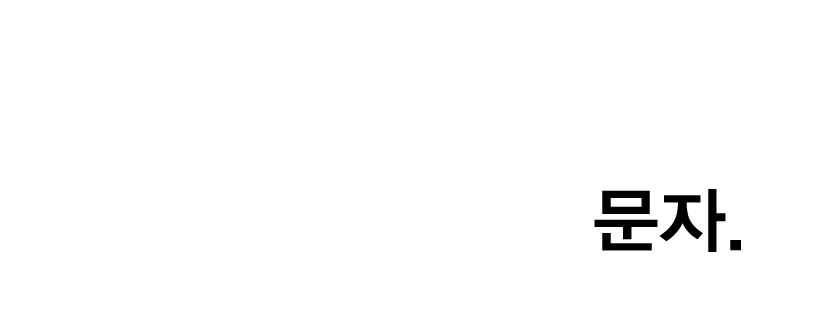
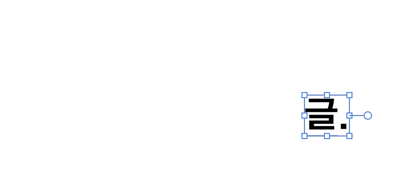

Self-interview Project.
280419 -ing. (작업 진행 중)
-
나를 잘 알고 싶어 시작한 셀프 인터뷰 아카이빙 프로젝트.
하루 한 가지 스스로에게 던지는 질문이나 취향, 다른 이들에게 받은 응답들을 기록합니다.
Q. 이름에 대해.
A. 수지. 할머니가 지어주셨다(고 알고 있다).
어르신들에겐 자주 '내가 오늘 수지맞았네~' 라는 농담을 듣는다. 그 농담을 들을 때마다 즐거운 이유는 나도 자주 내 자신에게 그런 생각을 하기 때문이다. 이렇게 운이 좋게 태어나다니. 이름 따라 수지 맞은게 분명해, 라고.
내 이름을 꽤 좋아한다. 사실은 불에 가까운 사람인 것 같은데 이름에 물이 왼쪽 편방 삼수 변자로 들어간 까닭에 성정이 알맞게 중화되어 잘 흐르고 사는지도 모르겠다고 생각했다.
이름을 이름으로 부르는 것을 좋아한다. 스쳐가는 만남이어도 이름을 외워서 한번이라도 더 불러주려 노력한다.
말에는 힘이 있고, 그래서 이름을 부르는 일에도 그 사람의 존재만큼이나 중요한 것들이 깃들어 있다고 생각한다. 전에 읽은 어떤 책에서는, 아주 오래 전엔 이름이 매우 중요한 것이어서 부모님과 배우자 외에는 알 수 없는 것이었다고 적혀 있었다.
누군가와 스치고 마주치는 인연만큼이나, 누군가의 이름을 알게되는 인연도 아주 놀랍고 멋진 일인 거라는 생각을 한다. 그래서 더 많이, 사랑하는 사람들에게, 이름을 불러주려 노력한다. 그리고 나도 곁의 소중한 사람들에게 사는 동안 오래 '수지야.'라고 불릴 수 있으면 좋겠다고 생각한다.
Q. 오늘 가장 기억에 남는 문자(나 카톡, 메신저)
A. 수지 보고 싶어.
Q. 요즘 듣는 플레이리스트.
A. 가장 최근의 리스트는 대부분이 우원재.
『SS』 / 『호불호』 / 『Hashtag』 / 씨피카의 『지금이 아니면 (feat.우원재, Crush)』 / 구원찬 『너에게』. 그리고 015B, Wyne 『더 좋아한 내가 진 거야』를 돌려 듣는다.
쇼미더머니를 본 것도 아니고 원래 팬이었던 건 아닌데 ('시차'는 좋아했었다.) 작년에 우연히 af 앨범 1번 트랙을 듣고 너무 좋아서 한동안 '울타리'랑 'I love you'만 듣고 다닌 기억이 난다. (Brenda Lee의 'I'm Sorry'와 우원재의 목소리 톤이 아주 잘 어울려서 그랬는지도.)
그러다 최근에 복면가왕 영상을 봤고, 의외의 선곡과 목소리에 깜짝 놀랐고, 나보다 어리단 사실에 충격을 먹었고(!) 결정적으론 너무 잘생겨져서 (웃음) 약간 입덕 초기 상태가 된 것 같다. 씨피카랑 더 많이 작업해줬으면 좋겠다.
이건 얼마 전에 안 사실인데 af 발매일이 내 생일 날짜였더라. 운명이구나 싶은 마음으로 경건히 모든 트랙을 다시 듣는 중. 가사가 진짜 좋다. 아티스트에게 입덕하게 될 것 같은게 굉장히 오랜만이라 나 스스로도 좀 놀라고 있다. (사람 취향 참 일관적이다.)
평상시엔 인디 음악을 많이 듣는다.
가사나 멜로디에 집중하는 타입인 것 같긴 하다. 너무 시끄럽고 정신없는 장르보단, 적당히 잔잔하고 조용하고 밝거나 우울한 음악에 끌리는 편. 인디 쪽은 좋아하는 아티스트가 너무 많은데 여백이 없어 적지를 못하겠다.
최근에 어디서 봤는데 좋아하는 가수를 말할 때
"글쎄... 박효신, 아이유, 그리고 NCT 127"
라고 말하면 아무도 눈치채지 못한다고 한다. 나도 응용해야겠다. 글쎄.. 백예린, 폴킴, 새소년, 1415? (웃음).
근데 사실 이제 인디 씬도 워낙 유명하고 멋지고 좋은 음악 하는 아티스트들이 많아서 진짜 다 적자면 끝이 없는거 같다. 다 유명하고 다 좋아 진짜. 더 유명해져서 더 좋은 음악 막막 내줬으면 좋겠다.
아무튼 이러다보니 그냥 음악적으로 딱히 편향 없이 좋으면 다 듣는 막귀의 대중표본이 내가 아닐까 종종 생각한다.
Q. 가장 좋아하는 시
A. 샤를 보들레르(Charles Baudelaire)의 『취하라(Enivrez-vous)』.
기억하는 한 가장 처음, 그것도 동경하는 사람에게, 선물받은 시였기 때문에.
Q. 나의 작업 중 내가 가장 좋아하는 것.
A. 학생 때 했던 작업들은 거의 다 좋아한다. 특히 16, 17년도.
지금 보면 서툴고 미숙한 것들도 많은데 그냥 애착이 많이 가서 그런가. 여러가지로 이성과 감정 사이에서 폭풍같은 시기를 보내던 때라 그런지, 아웃풋이나 결과에 상관없이 지금도 그 작업들을 보면 그 때의 분위기나 감정, 생각이나 고민들이 생생하게 느껴져서 애정이 간다.
그래도 골라보자면, '조각, 글(2017)' 이나 '푸른 벽(2017)'.
조각글은 처음으로 나의 어두운 글들을 드러낸 프로젝트이기도 하고 우울한 내용임에도 불구하고 작업+설치하면서 가장 부담 없이 사람들과 웃고 즐겼기 때문에 좋다. 이건 언제라도 다시 재 작업해서 완성시키고 싶다.
푸른 벽은 아주 예전 작업을 3년만에 디벨롭시켜서 진행한 거라 개인적으로 의미가 있었고, 더불어 주제로 담고 있던 당시의 고민을, 작업 진행 과정에서 정리하고 극복해나간 기억이 있어서 더 멋지고 놀라운 부분으로 남아있다.
고민으로 인해 구상한 작업이, 그 과정에서 나 스스로에게 답을 찾아갈 수 있는 실마리를 준 건 처음이었는데, 작품이 이미 그 자체로 나의 어떤 부분을 승화시킨 느낌이 들어서 멋졌던 경험.
좁은 자취방에서 담쟁이 덩쿨을 키우느라 분주했던 기억도 한 몫 한다.
그 외에도, 이효열 작가님의 프로젝트에 참여하면서 적었던 '잠들어 있는 말(2018)'이나, 15년도에 동생을 주제로 작업했던 사진 연작 'MY SIS(2015)'도 좋아한다.
좋아하는 작업의 공통점을 골라보면 전부, 부끄러울 정도로 솔직하고 정제되지 않은 감정들이 보이는데, 그 때는 그게 내가 작업 안에서 나를 갈무리하고 표현하는 게 유일한 돌파구에 가까워서 그랬다. 조금 감정적이긴 해도 나름대로 건강하고 발전적인 방향으로 욕구나 눌려진 것들을 분출한 셈.
졸업작품이었던 코인노래방 '비트위의 나그네'도 물론이고, 디자인 작업이나 졸업 이후에 진행한 책 작업들도 좋아하지만, 어쨌든 표현에 있어서 한계나 가능성이 많이 열려있던게 미디어아트라서 그런지, 내겐 그런 작업들이 많이 기억에 남는다.
Q. 어떤 작업은 진지하고 우울하다가도 그림일기나 평상시의 템포는 가볍고 병맛+웃겨보이기도 한다. 어느 쪽이 더 자신에 가까운가?
A. 둘 다 인 것 같다.
아재개그나 고오급 유우머나 말장난 드립은 집안 내력이다. 아버지로부터 물려받은 유전정보에 포함되어 있던 게 확실해. 웃긴 게, 네 형제 중 아버지만 빼고 할아버지 마저 다들 근엄하시다. 둘째가 태어날 때 대체 무슨 일이 있었던 걸까.
어렸을 땐 아재개그를 아재스럽지 않게 구사하는데 꽤 일가견이 있어서 학창시절 반 아이들을 사로잡아 은근한 뒷동네 인기를 평정하곤 했는데, 스무 살 이후로 나이가 들면서는 우울한 감성이 그걸 넘어서 버렸다.
한참 복잡하던 시기엔 그래서 스스로 많이 혼란스러워 하기도 했다. 난 분명 우울하고 힘든데 왜 어느 날은 웃고 장난을 치기도 하지? 둘 중 한 부분은 거짓이거나 위선이거나 가짜 연기일까? 어느 쪽이 내 진짜인가 하고.
그런데 지금은 안다. 우울이나 밝음이나 모두 나를 이루는 다원화 된 전체 속의 한 요소일 뿐이고, 내가 나를 굳이 한 가지의 사람으로 정의 할 필요는 없다는 것. 그냥 나는 그런 사람. 그런 내가 좋으니까, 그걸로 충분한 것.
조금 혼란해 보여도 다른 관점에서 보면, 아무도 시도 못한 그 사이의 융합된 무언가를 세계 최초로 해낼 지도 모르는 메리트를 내가 가진게 아닌가! 우울한 개그라든지, 진지한 도라이라든지, 긍정적인 우울이라던지..?
4차 산업혁명 시대에 그 정도 융합은 의외로 센세이션이 될지도 모른다는 긍정적인 아무말을 적으며 마무리하겠다. 나는 그냥 보이는 대로의 그런 사람.
Q. 인생 여행지가 있다면?
A. 아, 이건 정말이지 단호하게 포르투. 가장 최근 다녀 온 탓에 생생해서 그런 걸 수도 있지만 망설임 없이 말할 수 있다. 지금껏 다닌 모든 여행지가 전부 다 좋았지만, 정착하고 싶다는 마음이 드는 도시는 정말 처음이었으니까.
이제껏 많은 여행지가 도망치듯 떠난 회피성이었던 것에 반해 포르투는 시작부터 끝까지 마냥 즐겁고 신나있어서 그랬는지도 모르겠다.
한 도시에 3주 넘게 머무른 것도 처음이었고, 그렇게 오래 혼자 여행을 한 것도 처음이었는데, 떠나있는 내내 하루도 행복하지 않은 날이 없었다. 매일 다른 하늘의 해 지는 색과 모양을 바라보는 것만으로 아름답고 감동이어서 눈을 뗄 수 없었으니까. 좋은 사람들, 내가 돌아갈 사람들이 떠오르고, 함께 나누고 싶어서, 보고싶은 사람들이 많이 생각나던 노을.
여기저기 사랑이 가득했던 도시. 사랑하는 사람과 꼭 다시 와야지 생각했다. 노을 아래에서 꼭 안아줘야 겠다고.
원래 목표로는 7월 즈음에 몽골에 가는 게 꿈이었는데, 포르투에서 만난 언니가 모로코 사막을 거쳐 왔다며 보여준 사진들이 너무 아름다워서, 언젠가 한 번은 기회가 된다면 꼭 사하라에도 가보려고 한다. 몽골이든 모로코든 어딘가의 사막과 오로라는 나의 버킷리스트.
물론 좋은 친구들 사람들과 함께여서 모든 여행지가 전부 인생에 가까웠다. 결국 내가 돌아올 곳은 그 곁이니까.
Q. 좋아하는 장소 3가지.
A. 좋아하는 촉감의 이불 속, 햇볕 아래 공원, 강이나 바다가 보이는 곳.
아, 세가지만 고르라니 너무한 것 같다. 좋은 사람과 걷는 거리라면 어디든.
Q. 가장 존경하는 사람은?
A. 사랑하는 사람들의 부분 부분을 모두 존경한다. 큰 '롤모델'은 없다. 누군가의 어떤 부분이 멋지다는 생각은 자주 하지만, 그 사람처럼 되고 싶다거나, 닮은 인생을 살고 싶다고 생각한 적은 없는 것 같다. 모두에게는 자신만의 삶의 철학이나 신념이 있으니까 어떻게 보면 존경하지 않을 사람은 하나도 없는지 모른다.
그런 관점에서 내게는 '존경'보다 '동경'이란 단어가 더 가깝다. 멋지다. 응원하고 싶다. 이야기를 나눠보고 싶다. 가치관과 생각을 닮아가고 싶다. 하는 생각은 많이 했지만 '부럽다'고 느낀 적은 거의 없다. 사람마다 자라온 환경과 경험과 사고와 가치가 다르고, 마냥 멋져보이는 어떤 순간들은 그 사람이 온전히 겪어내고 쌓아온 시간에 대한 결과물인 거니까, 부러워 할 수 있는 영역의 것이 아니라 여긴다.
그래서 존경이란 단어는 내게 곧 사랑과 같다.
첫 출산을 앞둔, 어린시절을 함께 보낸 친구의 용기와 단단함을 존경한다. 요즈음 하는 공부로 새벽까지 불을 켜고 앉은 엄마의 등을 사랑하고, 저마다 꿈을 향해 나아가며 바쁘게 사는 이름들을 오래 떠올리며 응원한다. 나의 곁에 남은 사람들은 모두 내가 존경하고 사랑하는 사람들 뿐이다.
자칫 지나쳤을지 모르는 그들의 빛나는 부분을 내가 알아볼 수 있었단 게 얼마나 다행인지. 꼭 누군가를 존경해야만 사랑하게 되는 것은 아니지만, 사랑하게 되면 더 오래 천천히 알아가고 싶어지고, 그렇게 가까워지다보면 그 사람의 더 깊은 부분들을 알게 되니까, 어쩌면 당연한 일.
그럼에도 그에겐 그의 씬이 있고, 내겐 나의 씬이 있는 법이니까. 인생이 영화라면, 나는 씬마다 나로서 유일하게 정의되는 미장셴이었음 좋겠다고 생각한다. 내 롤모델은 내가 되었으면 좋겠어. 다만 오래 친구들의 장면을 응원하며 아낌없이 행복한 덕질을 퍼부어주는 그들의 멋진 팬이 되고 싶다.
Q. 글 쓰는 건 취미인가. 내게 글쓰기란.
A. 내게 글이 어떤 의미인지 자주 생각 한다.
분명 몇 해 전만 해도 '글은 그냥 취미로 쓰는거야. 나는 디자인으로 일하며 살고 싶어.'라고 말하고 다녔는데, 내가 아무리 말하고 다녀도 주변에선 나를 가장 먼저 '책 만드는 아이'로 생각하곤 하더라. 나는 그게 퍽 서운하기도 했고 억울하기도 했고. 그 때는 그게 나에게 디자인적인 능력이 부족해서 그 쪽으로는 눈에 띄지 않는다고 말하는 것처럼 느껴졌었다. 그렇다고 내 스스로 '글 쓰는 사람' 이라고 말하기엔 그 정도 능력이 아니라는 걸 너무나 잘 알고 있었고.
그런데 어느 날 문득, 고1때 까지 소설가가 되고 싶다고 생각했던 기억을 떠올렸다. 중학교 때는 문창과와 공예과를 두고 진로를 고민했었고. 그제야 비로소, 나는 생각보다 아주 오래 전부터 두 가지를 모두 사랑하는 사람이었구나 깨달았다. 꽤 오래전부터 나는 글을 사랑하는 사람이었구나.
지금도 누군가 내게 '작가님'이라고 부르거나, 다른 이에게 나를 '책을 쓴다'고 소개할 때면 부끄럽고 말을 아끼게 된다.
좋은 문장을 가진 사람이, 깊은 자신의 철학과 이야기를 가진 사람이, 그럼에도 상황이 따라주지 않아 빛을 보지 못하고 있는 사람들이 얼마나 많은지 알고 있는데, 내겐 그리 불릴 능력도 자격도 아직 충분하지 않다고.
그렇지만 어떤 이름으로든 오랫동안 적는 걸 멈추지 않는 사람이 되고 싶다고 생각한다. 언제나 나는 말 보단 글이 더 편하고, 그러니까 멈추지 않고 나의 이야기와 마음을 전할 수 있음 좋겠다고. 그런 의미라면 언제든 글은 내게 취미가 아닌 삶이 될 테니.
Q. 가장 오래된 어린 날의 기억은?
A. 기억하는 가장 또렷한 처음은, 세 살 때의 시골집 창호지와 손에 꼭 든 참외 접시.
그 때만 해도 근교로 조금만 나가면 있는 굽이진 산 속 동네에 증조할머니가 농사를 지으며 살고 계셨는데, 유치원에 다니기 전 까지는 주말마다 할머니 할아버지, 엄마 아빠와 함께 차를 끌고 들어가서 고구마도 심고, 붉은 포도 알갱이에 하얀 봉지를 덧씌우고, 마을 잔치에 돼지를 잡아 순대 속을 채워넣는 것도 보고 그랬던 기억이 난다.
오래된 창호지와 쇠로 된 문고리를 잡아 열고 "할머니 참외 드세요!" 라며 종종 뛰어가던 걸음의 감각이 잊히지 않는다. 정작 나를 마주 안아주시던 돌아가신 증조할머니의 얼굴은 떠오르지 않는데도.
육촌 언니 오빠들과 함께 시골길을 뛰어다니면 온 몸에 도깨비 바늘이 달라붙어 떼어내느라 곤혹을 치뤘던 것도 전부.
지금에 와서는 사랑과 애정이 가득한 어린 시절을 보냈구나 하고 떠올리게 된다.
작년 겨울 개봉한 [리틀 포레스트]에서 혜원의 엄마(문소리 분)가 이런 말을 한다.
"혜원이가 힘들 때마다 이 곳의 흙 냄새와 바람과 햇볕을 기억한다면 언제든 다시 털고 일어날 수 있을 거라는 걸 엄마는 믿어."
그 장면에서 나의 어린 날을 깊이 떠올렸다. 돌아갈 고향이 있는 건 아니지만 적어도 그 흙 냄새와 바람과 햇볕이 내게 남아있음에 감사했다.
그 밭 고구마는 아마 네가 다 심었을 거라던 엄마의 말이, 어느새 내겐 커다란 밭과 흙으로, 부드러운 촉감으로 돌아오고 있다는 게, 내겐 조금 큰 위로가 됐다.
Q. 나를 정의하는 말들.
A. 따뜻한, 세심한, 능력있는, 배려하는, 사랑하는, 단단한, 안정된 말들로 남고 싶다.
나는 자주 무심에 가까워서. 고마운 곁에, 고마운 마음.